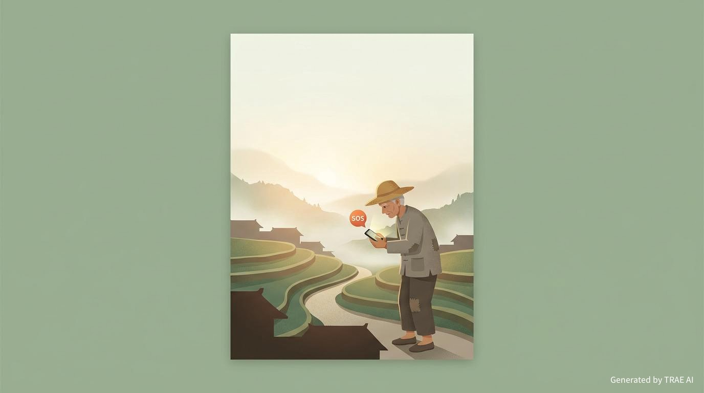

TRAE AI 创造力大赛｜社会服务赛道 · 智慧助老方向
乡村互助平台
无网求救 + 轨迹追踪，让山里老人不再失联
无信号也能求救
旧手机再利用
村委会协同救援
后台静默轨迹
山里出事最怕的不是“找不到药”，而是“找不到人”。只要失联一夜，黄金救援时间就过去了。
发起人：广西农村个人开发者（个人参赛）
一分钟看懂
核心承诺：老人即便身处信号盲区，也能把“最后一次可用位置”用最朴素、最可靠的方式传给家人和村委会，缩小搜救范围，把“漫山找人”变成“带着方向去找”。
要解决的事
失联
山区劳作摔倒、突发疾病、迷路时无法呼救，发现晚、找人慢。
最小可行方法
旧手机 + 轨迹
后台静默记录位置；一键 SOS 发送最近坐标给子女与村委会。
协同救援主体
家属 + 村委
村委会后台统一管理、弹窗告警、通知附近志愿者就近救援。
问题与场景
在山区农村，老人外出劳作往往是“一个人、一条山路、一个下午”。一旦摔倒或急病，手机有电却没信号，电话打不出、定位发不出；等到家人发现异常再组织搜寻，常常已经错过最佳救援时间。
我亲眼看见村里一位老人上山摔倒后无法呼救，全村人翻遍整座山才找到他。那天他手机有电，但山里没有信号。
真实经历（发起人亲历）
典型使用场景
- 独自上山砍柴、放牛、干农活，体力透支或摔倒。
- 偏远村落突发疾病，无法清晰描述位置。
- 家属发现老人未按时归家，电话不通，只能组织“人海式搜山”。
- 延伸：驴友、户外探险者、野外作业人员在信号弱区迷路或受伤。
方案与形态
产品是一套“旧手机再利用”的乡村互助系统：老人随身带一部装有 App 的旧安卓手机；App 在后台静默记录轨迹，并在触发求救时把坐标发送给预设联系人；村委会后台统一接收、告警并组织附近志愿者救援。
为什么选择旧手机
- 零硬件门槛：无需新增设备采购，直接复用子女淘汰旧机。
- 老人学习成本低：不要求会打字、会地图，只需会“按住 SOS”。
- 可逐步升级：在高风险老人身上再叠加低成本外设或北斗终端。
核心功能
后台静默轨迹记录
- 安装后无需操作，默认每 60 分钟记录一次 GPS 坐标。
- 无信号时位置数据保存本地；回到有信号区域后自动补传。
- 村委会后台可回放历史轨迹，用于缩小搜救范围。
无网求救（短信队列）
- 长按首页红色 SOS 3 秒，自动读取最近一次记录坐标并生成求救消息。
- 短信在弱信号/无数据网络时仍可能送达；暂时发不出去则排队，一旦恢复到可发短信的信号即刻发送。
- 接收方包含预设子女号码与村委会值班号码，形成“双保险”。
紧急电话自动触发
- 拨打 110/120/119 时自动识别并触发位置获取与短信通知。
- 老人无需额外学习步骤，最大化“慌乱时也能成功”。
村委会管理后台
- 实时查看全村老人最后位置，支持按人/按组筛选。
- 收到求救信号后大屏弹窗告警，一键通知附近志愿者前往。
- 形成“村里就近救援”的组织闭环，减少纯靠家属远程指挥的滞后。
无网求救如何成立
这里的“无网”指无数据网络或信号极弱的常见山区场景。产品策略是不奢望“实时在线”，而是把救援所需的关键事实压缩到最小：最后一次可用位置 + 求救意图，并优先走短信这条更“朴素”的通道。
关键设计点
- 位置先存下来：轨迹点在本地持久化，求救时不依赖实时联网。
- 消息可排队：短信发送失败时保留队列，信号恢复即刻补发。
- 收敛信息量：短信只发坐标、时间、姓名/编号和回拨号码，降低传输失败概率。
flowchart TD
A[后台每 60 分钟记录一次位置] --> B[本地保存轨迹点]
C[长按 SOS / 拨打 110/120/119] --> D[读取最近轨迹点]
D --> E[生成短信：坐标 + 时间 + 联系方式]
E --> F{短信是否发出}
F -->|成功| G[家属 & 村委收到求救]
F -->|失败| H[写入短信队列]
H --> I{恢复到可发短信的信号}
I -->|是| G
系统结构
系统把“个人求救”变成“村级协同事件”：老人端负责记录与触发，后端负责存储与权限，村委会端负责告警与组织，家属端负责确认与沟通。
flowchart LR
subgraph Elder[老人端（旧安卓手机）]
A[定位采集] --> B[(本地轨迹库)]
C[SOS/紧急电话触发] --> D[短信队列]
B --> C
end
subgraph SMS[短信通道]
D --> S1[子女号码]
D --> S2[村委会号码]
end
subgraph Cloud[平台后端（已完成）]
API[Flask API] --> DB[(MySQL)]
API --> R[(Redis)]
end
subgraph Admin[村委会后台（已完成）]
M[告警弹窗/大屏] --> V[志愿者通知]
H[历史轨迹回放] --> M
end
Elder -->|有信号后补传| API
API --> Admin
S2 --> M
落地与试点
落地路径按“先可用、再增强、再融合”的节奏推进，目标是在 2026 年内完成 3 个自然村试点验证，形成可复制方案。
| 阶段 | 当前目标 | 关键交付 |
|---|---|---|
| 阶段 1 零硬件成本 |
用旧安卓手机完成“轨迹记录 + 求救短信 + 村委协同”闭环 | 安卓原生插件：后台定位、短信队列、紧急电话识别；与现有 Uni-App 集成 |
| 阶段 2 低成本外设 |
覆盖更极端的“完全无信号”区域与高风险人群 | 可选配蓝牙北斗终端（约 200–500 元），提供更稳定的定位与求救能力 |
| 阶段 3 平台深度集成 |
接入更专业救援体系，实现跨村、跨区域联动 | 对接北斗卫星短信官方能力；接入 120、社会救援组织等 |
试点组织方式（建议）
- 村委会设定值班号码与后台管理员；确定志愿者名单与“就近响应”规则。
- 以家庭为单位为老人安装旧手机与 App，并完成联系人绑定与授权。
- 用一次“演练”替代培训：让老人实际按一次 SOS，确保记得住。
项目进展
核心系统已搭建完成，正在补齐老人端的安卓原生能力，形成可直接试点的最小闭环。
| 模块 | 状态 | 说明 |
|---|---|---|
| 后端 API 服务 | 已完成 | Flask + MySQL + Redis |
| 乡亲邻里端 App | 已完成基础功能 | Vue + UniApp |
| 村委会管理后台 | 已完成 | Vue + Element Plus |
| Redis 缓存优化 | 已完成 | 降低高频查询压力 |
| 中文乱码修复 | 已完成 | 端到端编码与数据库字段梳理 |
| 紧急求救原生插件 | 开发中 | 监听电源键/短信发送/后台定位等原生能力 |
| 北斗卫星对接 | 规划中 | 待试点验证后逐步引入 |
价值与可持续
社会价值
- 用“旧手机 + 软件”把农村老人最常见的安全隐患从“失联”降到“可定位”。
- 把搜救从“全村漫山遍野”变成“有方向地搜”，显著减少时间与人力浪费。
- 让外出务工子女获得基本的安心：不求实时监控，但能在关键时刻提供线索。
可持续方式（不靠一次性捐赠也能运转）
- 基础功能永久免费，降低进入门槛，优先覆盖最脆弱人群。
- 可选增值服务：安全围栏、家属通知策略、健康设备接入（在自愿授权前提下）。
- 延伸到户外群体形成规模，反哺公益试点的运维成本。
风险与对策
极端“完全无信号”区域
短信也需要基础蜂窝信号。如果老人处于完全无服务区域，短信无法送达。
- 对策：用轨迹回放把搜救范围缩小；对高风险人群可选配北斗终端（阶段 2）。
老人忘带手机或电量不足
- 对策：配套“随身腰包 + 充电宝”，并通过村里一次演练固化习惯。
- 对策：App 端做低频定位与省电策略，并提示家属关注连续离线时长。
隐私与误用担忧
- 对策：默认最小采集（每 60 分钟一次）；轨迹仅授权给绑定家属与村委会指定管理员。
- 对策：明确数据保留周期与一键解绑；试点阶段建立村级使用公约。
团队与协作诉求
发起人为广西农村个人开发者，已完成后端、App 基础功能与村委会后台。当前最需要的是把“最后一公里能力”做稳，并快速进入真实试点。
希望通过大赛获得
- 安卓原生能力与系统后台保活的技术指导（短信队列、后台定位、权限与适配）。
- 乡村试点资源对接（村委会/乡镇政府/公益组织/救援队）。
- 公益资助与传播，让更多村庄可以用“零门槛方案”先跑起来。